Introduction to Pandas: The Swiss Army Knife of Data Analysis
Spreadsheets ke manual data manipulation se aage badhein: Samjhein Pandas kya hai, Series aur DataFrame ke beech ka difference, indexing aur labeling ke core concepts, data inspection workflow, aur real-world Python data analytics foundations.
🧭 Curriculum Roadmap: Topic 1 Directory
Yeh lesson 16 structured sections mein divided hai taaki aap beginner-friendly Hinglish mein step-by-step Pandas ke fundamental concepts ko master kar sakein:
1. Welcome to Pandas: The College Dean's Spreadsheet Challenge
Imagine kijiye aap ek college ke academic office mein student intern hain. Dean sahab aate hain aur aapko ek pendrive dete hain jisme ek Excel spreadsheet file hai: all_students_2026.xlsx.
Is spreadsheet mein poore college ke 1,000 students ke records hain: Student Name, Roll Number, Department, Attendance Percentage, Semester Marks, aur Fee Payment Status.
Dean sahab aapse 5 simple sawal puchte hain aur kehte hain ki report agle 30 minutes mein chahiye:
- Sawal 1: Wo sabhi students kaun hain jinhone 80 se zyada marks score kiye hain?
- Sawal 2: Har department (Computer Science, Electronics, Mechanical) ka average marks kitna hai?
- Sawal 3: Kin students ki attendance 75% se kam hai taaki unhe exam admit card rokne ki warning bheji ja sake?
- Sawal 4: Kya spreadsheet mein kisi student ka marks ya attendance missing (blank) hai ya galat negative value entered hai?
- Sawal 5: Poore college ka topper kaun hai aur uska final score kitna hai?
Agar aap yeh sab manual spreadsheet filters, mouse scrolling, copy-pasting, aur VLOOKUP cell formulas se karne baithenge, to 1,000 rows mein aapse human error hona tay hai. Aur agar kal Dean sahab 50,000 students ki doosri file de den, to spreadsheet hang ya crash ho jayegi!
Python Pandas ke sath, yeh sabhi 5 questions sirf 1-1 line ke readable code se solve ho jaate hain! Aur sabse achhi baat: aapka Python script 1,000 rows par chale ya 10,00,000 rows par — calculation fraction of a second mein 100% accurate results produce karta hai!
By the End of This Topic: What You Will Master
- Pandas kya hai aur Data Science ecosystem mein iska kya role hai.
- 1D
Seriesaur 2DDataFrameka structure aur mental model. - Row indexes, column headers, aur mixed data types ka concept.
- Pandas aur NumPy ka gehra relationship (C-buffers under the hood).
- Pandas install karna aur
import pandas as pdconventionally use karna. - Pehela Series aur DataFrame create karna.
- Ek complete 10-step exploratory data analysis (EDA) mini-workflow run karna.
- Real-world data ko bar charts aur line plots mein visualize karna.
- CSV aur Excel files ko disk se memory mein read karna.
2. What is Pandas? (Panel Data Architecture)
Pandas Python programming language ki sabse popular open-source Data Manipulation aur Data Analysis library hai. Iska naam econometrics ke technical term "PANel Data" (multidimensional structured datasets) aur "Python Data Analysis" ke combination se bana hai. Isko 2008 mein quantitative analyst Wes McKinney ne develop kiya tha jab unhe financial quantitative modeling ke liye flexible tabular tool ki zaroorat thi.
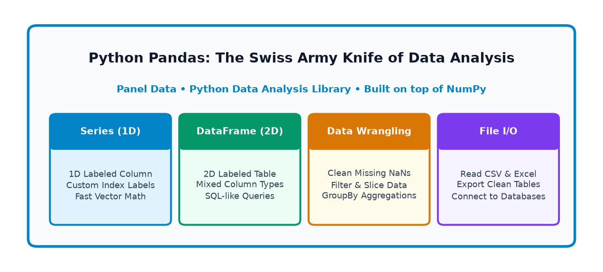
Data Science mein raw data aksar text files, spreadsheets, web APIs, ya SQL databases mein bikhra hota hai. Pandas ka role raw unstructured data ko ek structured, clean, labeled tabular representation mein badalna hota hai taaki human analysts aur machine learning algorithms uspar analysis kar sakein.
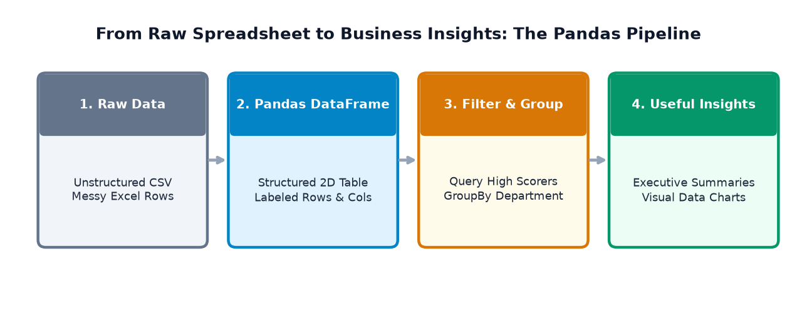
- Pandas is NOT a Database: Pandas data ko computer ki RAM (Random Access Memory) mein load karta hai. Yeh PostgreSQL ya MySQL ki tarah permanent ACID-compliant multi-user database storage replace nahi karta.
- Pandas is NOT a Machine Learning Engine: Pandas data clean, transform, aur reshape karta hai, lekin machine learning models (jaise Random Forests, Neural Networks) train karne ke liye hum scikit-learn, PyTorch, ya TensorFlow use karte hain.
- Pandas is NOT a replacement for Simple Python: Simple scripts ya web servers mein jahan tabular data nahi hai, wahan pure Python lists aur dictionaries hi kafi hoti hain.
3. Why Do We Need Pandas? (Spreadsheet vs Python)
Aksar beginners puchte hain: "Sir, agar hamare paas Microsoft Excel ya Google Sheets hai, to hume Python aur Pandas seekhne ki kya zaroorat hai?" Chaliye real-life challenges ko dekhte hain jahan traditional spreadsheets fail ho jaati hain aur Pandas baazi maar leta hai:
| Practical Data Challenge | Manual Spreadsheet Workflow | Python Pandas Workflow |
|---|---|---|
| 1. Dataset Size | 10 lakh rows cross karte hi Excel freeze ya crash ho jata hai. | Millions of records ko RAM mein fast vectorized C routines se process karta hai. |
| 2. Missing Values (NaN) | Blank cells anjane mein 0 treat hokar average distort kar deti hain. | isna(), dropna(), fillna() se missing data explicitly aur safely handle hota hai. |
| 3. Filtering Records | Manual dropdown click karo, filter select karo, data copy paste karo. | df[df['Marks'] > 80] — 1 single declarative line. |
| 4. Automation & Reproducibility | Har hafte naya data aane par poora kaam scratch se manually repeat karo. | Script ko run karo; har hafte naya data automatically 2 second mein process ho jata hai. |
| 5. Combining Datasets | VLOOKUP ya XLOOKUP formulas slow hote hain aur broken #N/A errors dete hain. |
pd.merge() aur pd.concat() se database-grade inner/outer joins hote hain. |
| 6. Audit Trail & Bugs | Kisne kaunsa cell formula kab edit kiya, koi history ya code review nahi hoti. | Clean Python code Git version control mein save hota hai, testing aur review possible hai. |
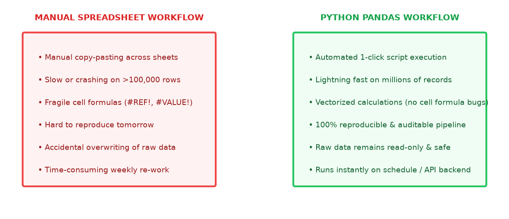
Hum yeh bilkul nahi keh rahe ki Excel bekar hai! Agar aapko 50 rows ka quick bill banana hai, ya non-technical boss ke sath ek interactive small table share karni hai, to Excel/Google Sheets best hai. Lekin jab data bada ho, analysis automated chahiye ho, data cleaning complex ho, ya machine learning pipeline banani ho, to Pandas is unmatched!
4. Real-World Applications in 8 Major Industry Domains
Duniya ki lagbhag har tech company, financial institution, healthcare research lab, aur government agency Pandas par rely karti hai. Aaiye dekhte hain 8 concrete real-life scenarios:
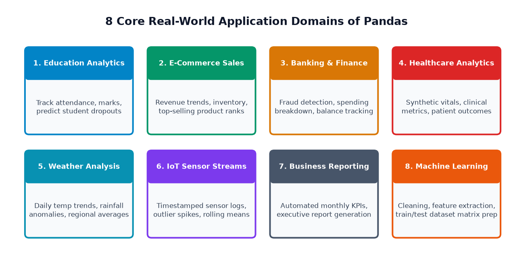
- Education & Student Analytics:
- Scenario: College mein har semester hazaron students ke attendance, assignment submissions, aur final exam grades ka record rakhna.
- Columns:
[roll_no, student_name, dept, attendance_pct, gpa, fee_status] - Question Answered: "Attendance kam hone aur marks drop hone ke beech kya relation hai?"
- Business Value: Semester shuru hone se pehle at-risk students ko identify karke early academic intervention provide karna.
- E-Commerce Sales & Inventory Management:
- Scenario: Amazon ya Flipkart jaisi online store par daily 50,000 orders generate hote hain.
- Columns:
[order_id, product_name, category, unit_price, quantity, customer_city, rating] - Question Answered: "Kis product category se sabse zyada revenue generate hua aur kin items ka stock khatam hone wala hai?"
- Business Value: Automatic re-stocking alerts aur profitable categories par festive marketing campaigns run karna.
- Banking & Financial Fraud Analytics:
- Scenario: Credit card swipe transactions ka stream monitor karna.
- Columns:
[txn_id, account_no, amount, merchant, timestamp, city, is_international] - Question Answered: "Kya kisi user ne 10 minute ke andar Delhi aur London dono jagah card swipe kiya?"
- Business Value: Suspicious transaction patterns detect karke account instantly freeze karna aur customer money safe rakhna.
- Healthcare & Clinical Trials (Synthetic Data):
- Scenario: Medical research studies mein patient vitals aur medicine dosage test karna.
- Columns:
[patient_id, age_group, blood_pressure, glucose_level, dosage_mg, recovery_days] - Question Answered: "Nayi medicine lene wale patients ka average recovery time control group se kitna kam raha?"
- Business Value: Drug safety verify karna aur empirical clinical statistics publish karna.
- Weather Forecasting & Climate Tracking:
- Scenario: Meteorological stations se daily weather sensor readings collect karna.
- Columns:
[date, city, min_temp, max_temp, humidity_pct, rainfall_mm, wind_speed] - Question Answered: "Is saal June ke mahine mein rainfall pichle 10 saal ke average se kitna kam raha?"
- Business Value: Drought (sukha) ya flood warnings time par issue karna.
- IoT Sensor Telemetry:
- Scenario: Smart factory floor par 100 industrial machines ke vibration aur heat sensors ko track karna.
- Columns:
[sensor_id, timestamp, temperature_c, vibration_hz, voltage, status] - Question Answered: "Kya kisi machine ka temperature 85°C cross karke abnormal vibration dikha raha hai?"
- Business Value: Machine breakdown se pehle preventive maintenance schedule karna, saving lakhs in factory downtime.
- Automated Business Reporting & Dashboards:
- Scenario: Har Monday subah management ko previous week ke sales KPIs ki PDF/Excel summary bhejna.
- Columns:
[branch, weekly_revenue, operating_cost, profit_margin, target_achieved] - Question Answered: "Kis branch ne weekly target exceed kiya aur kis branch ka profit margin drop hua?"
- Business Value: Manual 3-hour reporting work ko zero touch automation mein convert karna.
- Machine Learning Feature Engineering:
- Scenario: Raw real-world data ko clean 2D numerical matrix
Xaur targetymein prepare karna. - Columns:
[study_hours, attendance, prev_score, final_score] - Question Answered: "Scikit-learn model mein feed karne se pehle missing values impute aur categorical labels encode kaise karein?"
- Business Value: High-accuracy AI algorithms ko clean, leak-free training data provide karna.
- Scenario: Raw real-world data ko clean 2D numerical matrix
5. Installing and Importing Pandas (The Conventional 'pd' Alias)
Pandas Python standard library ka hissa nahi hota; yeh ek external package hai. Isliye isko apne computer ya virtual environment mein sirf ek baar install karna padta hai:
# Standard terminal install command (run only once in your environment)
pip install pandas
# Agar aap Jupyter Notebook ya Google Colab use kar rahe hain:
# %pip install pandas
Package installation environment setup ka ek one-time step hota hai. Apne Python script ya notebook cell mein baar-baar pip install mat likhiye. Ek baar install hone ke baad, bas Python code mein import karna kafi hota hai.
The Standard Industry Convention: import pandas as pd
Python community mein ek universal convention hai: Pandas ko import karte waqt alias pd use kiya jata hai. Isse code chhota, concise, aur standard banta hai:
# Universal industry import convention
import pandas as pd
import numpy as np
# Verify installation and check version
print("Pandas Version :", pd.__version__)
print("NumPy Version :", np.__version__)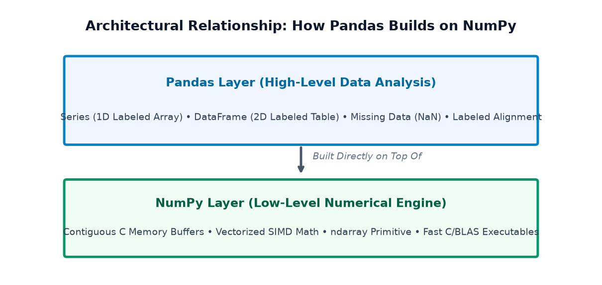
6. Understanding Series: The 1D Labeled Array
Pandas ka sabse basic data building block pd.Series hota hai. Simple shabdon mein:
"Ek Series ek 1-Dimensional array hoti hai jisme har value ke sath ek explicit label (Index) juda hota hai."
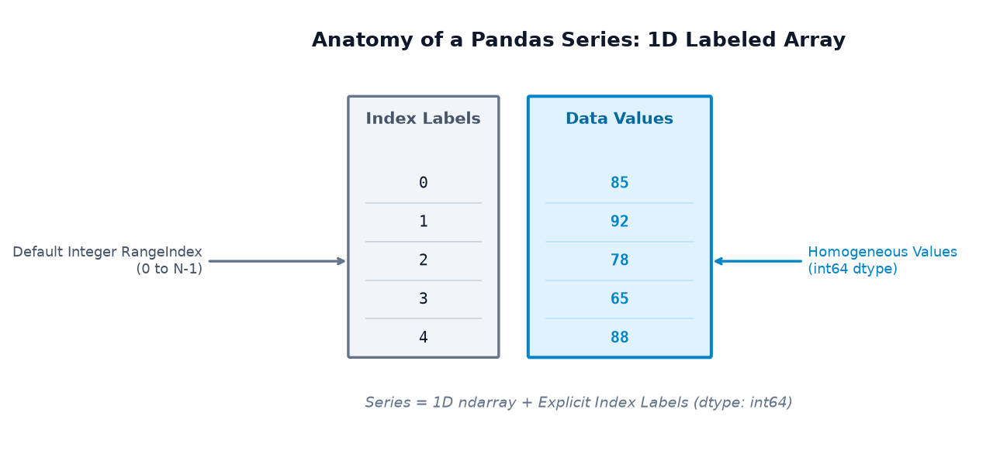
Python list aur Pandas Series mein fundamental difference samjhiye:
- Python List (
[85, 92, 78]): Isme values sirf integer position (0, 1, 2) se access ho sakti hain. List ko pata nahi hota ki 85 kiske marks hain. - Pandas Series: Isme har value ke sath ek meaningful name ya label (jaise 'Aarav', 'Diya', 'Rohan') attach ho sakta hai! Aap
marks['Diya']likhkar seedha value access kar sakte hain.
Example 1: Student Marks Series with Default Integer Index
Jab hum index specify nahi karte, to Pandas automatically 0 se shuru hone wala RangeIndex assign kar deta hai:
import pandas as pd
# Creating a Series from a simple Python list
marks_list = [85, 92, 78, 65, 88]
student_marks = pd.Series(marks_list, name="Student_Marks")
print("--- COMPLETE SERIES ---")
print(student_marks)
print("\nSeries Values Array :", student_marks.values)
print("Series Index Object :", student_marks.index)
print("Series Data Type :", student_marks.dtype)
print("Element at Index 1 :", student_marks[1])Example 2: Weekly Expenses Series with Custom Day Labels
Custom index labels define karke hum data ko calendar days ya customer names se seedha query kar sakte hain:
import pandas as pd
# Weekly expenses with customized day labels
days = ['Mon', 'Tue', 'Wed', 'Thu', 'Fri', 'Sat', 'Sun']
daily_spending = [250, 400, 150, 300, 650, 800, 500]
expenses = pd.Series(daily_spending, index=days, name="Daily_Expenses_INR")
print("--- WEEKLY EXPENSES SERIES ---")
print(expenses)
# Label-based query
print(f"\nMonday Spending : ₹{expenses['Mon']}")
print(f"Saturday Spending : ₹{expenses['Sat']}")
print(f"Total Spent Week : ₹{expenses.sum()}")
print(f"Daily Mean Spend : ₹{expenses.mean():.2f}")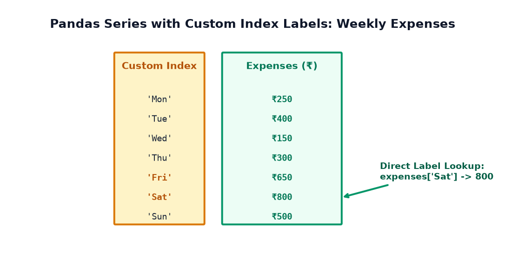
Series mein do tarike ki indexing hoti hai: Label-based indexing (jaise 'Mon', 'Sat') aur Position-based indexing (0th element, 1st element). Aage chalkar hum Pandas ke dedicated accessor methods .loc[] (label) aur .iloc[] (integer position) ke baare mein detail se seekhenge.
7. Understanding DataFrames: The 2D Tabular Structure
Agar Series ek single column hai, to pd.DataFrame ek poori spreadsheet table hai!
"DataFrame ek 2-Dimensional labeled tabular data structure hota hai jisme rows aur columns dono hote hain."
Ek DataFrame ko aap multiple Series ka ek group maan sakte hain, jahan har Series ek column represent karti hai aur sabhi columns ka row index aapas mein aligned hota hai!
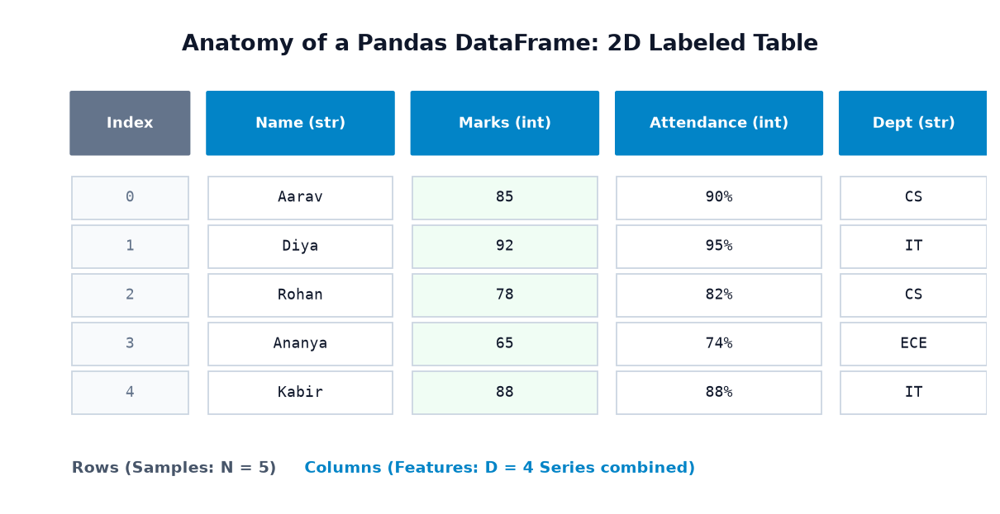
Example 1: Creating a Student Performance DataFrame
Python dictionary se DataFrame create karna sabse common aur readable tareeqa hai, jahan dictionary keys column headers bante hain aur values lists hoti hain:
import pandas as pd
# Creating a DataFrame from a dictionary of lists
data = {
'Name': ['Aarav', 'Diya', 'Rohan', 'Ananya', 'Kabir'],
'Marks': [85, 92, 78, 65, 88],
'Attendance': [90, 95, 82, 74, 88],
'Department': ['CS', 'IT', 'CS', 'ECE', 'IT']
}
student_df = pd.DataFrame(data)
print("--- STUDENT DATAFRAME ---")
print(student_df)
print("\nDataFrame Shape (Rows, Columns) :", student_df.shape)
print("Column Names in DataFrame :", list(student_df.columns))
print("Index Range :", student_df.index)Example 2: Online Store Products DataFrame & Vectorized Revenue Calculation
Real e-commerce store ka inventory data dekhte hain aur dekhte hain ki do columns ko multiply karke naya column kaise instantly generate hota hai:
import pandas as pd
inventory_data = {
'ProductName': ['Wireless Mouse', 'Mechanical Keyboard', 'USB-C Cable', 'HD Monitor', 'Gaming Headset'],
'Price': [799, 2499, 299, 8999, 1499],
'QuantitySold': [45, 18, 120, 12, 35],
'Category': ['Accessories', 'Peripherals', 'Cables', 'Displays', 'Audio']
}
products_df = pd.DataFrame(inventory_data)
# Vectorized Column Math: Price * QuantitySold = Revenue
products_df['Revenue'] = products_df['Price'] * products_df['QuantitySold']
print("--- PRODUCT SALES & REVENUE DATAFRAME ---")
print(products_df[['ProductName', 'Category', 'Price', 'QuantitySold', 'Revenue']])
total_revenue = products_df['Revenue'].sum()
print(f"\nTotal Store Revenue Generated: ₹{total_revenue:,}")8. Series vs DataFrame vs NumPy Array: The Core Comparison
Beginners aksar confuse hote hain ki kab NumPy array use karein, kab Pandas Series, aur kab DataFrame. Is comprehensive comparison table aur visual diagram se aapka concept hamesha ke liye crystal clear ho jayega:
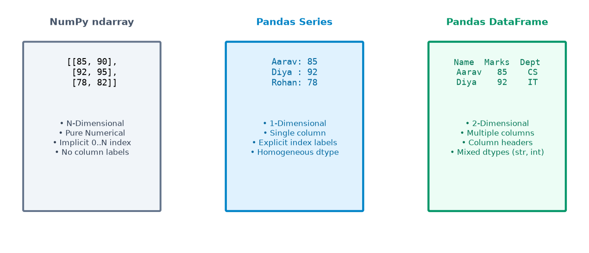
| Comparison Feature | NumPy Array (ndarray) |
Pandas Series | Pandas DataFrame |
|---|---|---|---|
| Dimensions | N-Dimensional (1D, 2D, 3D, ND) | Strictly 1-Dimensional (1D) | Strictly 2-Dimensional (2D) |
| Labels / Headers | No labels (only integer positions 0, 1, 2) | Explicit Row Index labels | Both Row Index labels AND Column Names |
| Data Types (dtypes) | Homogeneous (pure numbers) | Homogeneous (single dtype per Series) | Heterogeneous (Col A=str, Col B=int, Col C=float) |
| Primary Purpose | High-speed mathematical array computations | Single feature/column manipulation | Complete tabular data analysis & modeling |
| Mental Model | A mathematical vector or matrix grid | A single column with row headers | A full multi-column Excel spreadsheet table |
9. A First Mini Data-Analysis Workflow (10 Essential Steps)
Chaliye real-world student dataset par ek complete 10-step exploratory data analysis (EDA) pipeline execute karte hain:
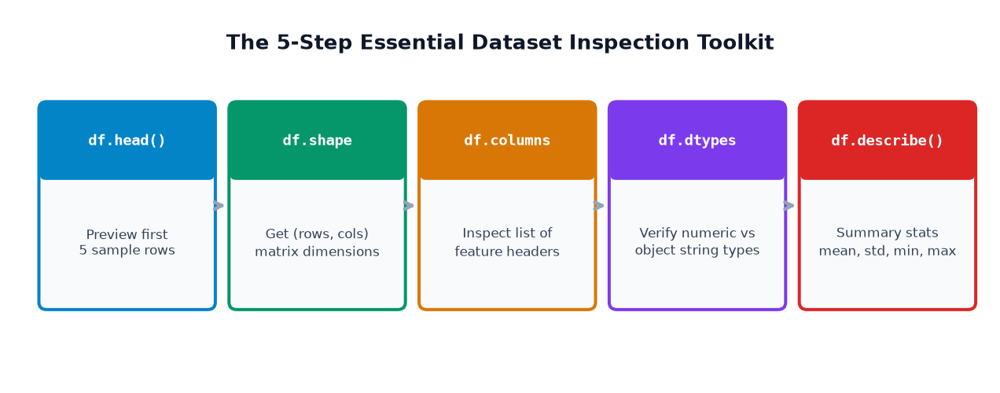
import pandas as pd
# Step 1: Create our student dataset
df = pd.DataFrame({
'Name': ['Aarav', 'Diya', 'Rohan', 'Ananya', 'Kabir'],
'Marks': [85, 92, 78, 65, 88],
'Attendance': [90, 95, 82, 74, 88],
'Department': ['CS', 'IT', 'CS', 'ECE', 'IT']
})
# Step 2: Preview the first 3 rows
print("1. Preview head(3):\n", df.head(3))
# Step 3: Inspect shape (Rows, Columns)
print("\n2. Shape of Table :", df.shape)
# Step 4: Inspect column headers
print("3. Column Names :", list(df.columns))
# Step 5: Check data types of each column
print("\n4. Column dtypes :\n", df.dtypes)
# Step 6: Summary statistics for numerical columns
print("\n5. Summary Statistics (describe):\n", df.describe().round(1))
# Step 7: Average marks of the batch
avg_marks = df['Marks'].mean()
print(f"\n6. Batch Average Marks : {avg_marks:.2f} points")
# Step 8: Maximum score achieved
print(f"7. Highest Mark Scored : {df['Marks'].max()} points")
# Step 9: Boolean filtering - Students with Marks >= 80
high_scorers = df[df['Marks'] >= 80]
print(f"\n8. High Scorers (>= 80 Marks) - Total {len(high_scorers)} Students:\n", high_scorers[['Name', 'Marks', 'Department']])
# Step 10: Department-wise student count
print("\n9. Department Counts:\n", df['Department'].value_counts())10. Understanding a Pandas DataFrame Visually
Chaliye visual diagram se dekhte hain ki Pandas DataFrame ke andar elements kaise arrange hote hain, column selection kaise kaam karta hai, aur boolean filtering se rows kaise filter hoti hain:
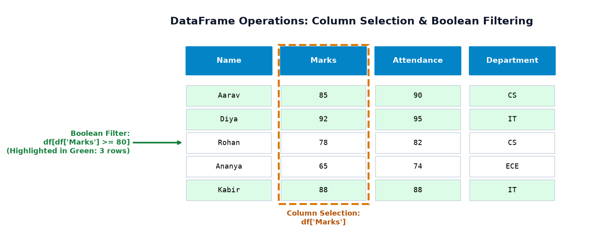
Key takeaways from this visual anatomy:
- Single Column Extraction:
df['Marks']likhne par Pandas DataFrame se ek individual 1D Series extract karke deta hai. - Row Filtering Condition:
df['Marks'] >= 80internally boolean values[True, True, False, False, True]generate karta hai. - Boolean Indexing: Jab is boolean Series ko
df[...]ke andar pass kiya jata hai, to Pandas sirfTruewali rows (Aarav, Diya, Kabir) select karta hai aurFalsewali rows ko discard kar deta hai!
11. Visualizing Data Using Pandas & Matplotlib
Numbers ki lambi tables dekh kar human brain thak jata hai, lekin visual graphs dekhte hi patterns instantly samajh aa jaate hain. Pandas ke paas built-in .plot() methods hote hain jo internally Matplotlib ko invoke karte hain!
1. Individual Student Marks Bar Chart
Neeche diye gaye plot mein har student ka score bar chart mein visualized hai, aur red dashed line class average (81.6 points) represent karti hai:
import pandas as pd
import matplotlib.pyplot as plt
df = pd.DataFrame({
'Name': ['Aarav', 'Diya', 'Rohan', 'Ananya', 'Kabir'],
'Marks': [85, 92, 78, 65, 88]
})
# Pandas bar plot
ax = df.plot(x='Name', y='Marks', kind='bar', color='#0284c7', legend=False)
plt.axhline(df['Marks'].mean(), color='#ef4444', linestyle='--', label='Class Mean (81.6)')
plt.title('Individual Student Marks')
plt.ylabel('Score Points')
plt.legend()
plt.tight_layout()
# plt.show()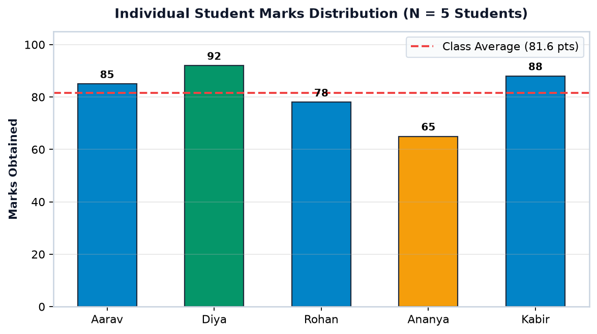
2. Department-Wise Average Marks Comparison
Pandas ke groupby() ke sath bar chart banakar hum compare kar sakte hain ki kis department ka academic performance strongest hai:
df_full = pd.DataFrame({
'Department': ['CS', 'IT', 'CS', 'ECE', 'IT'],
'Marks': [85, 92, 78, 65, 88]
})
# Group by department and compute mean marks
dept_means = df_full.groupby('Department')['Marks'].mean()
print("Department Mean Scores:\n", dept_means)
# Plot department averages
dept_means.plot(kind='bar', color=['#0284c7', '#d97706', '#059669'])
plt.title('Mean Marks by Department')
plt.ylabel('Average Score')
plt.tight_layout()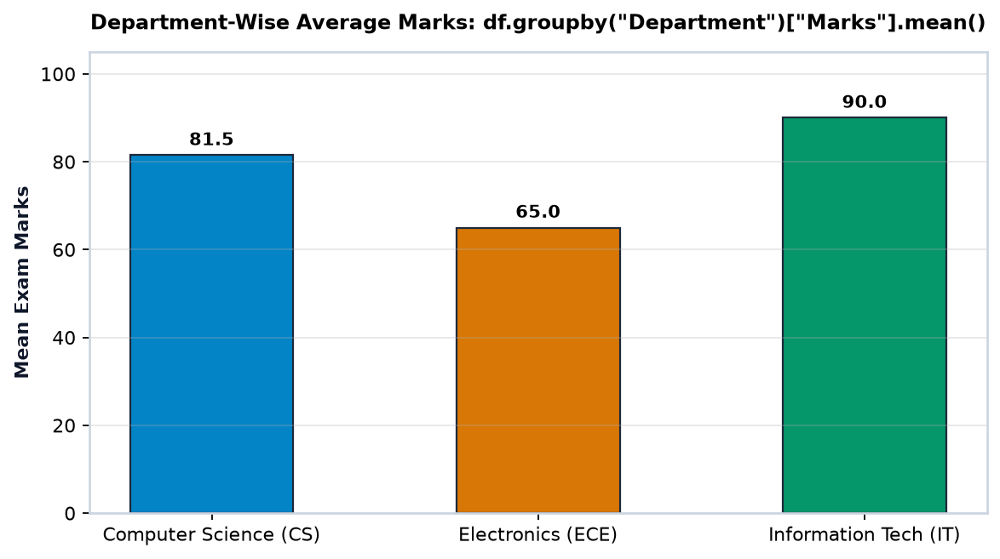
3. 7-Day Temperature Trend Line Chart
Time-series sensor readings ya daily weather data ko visualize karne ke liye Line Plot best hota hai:
temps = pd.Series(
[22.5, 23.1, 21.8, 24.0, 25.2, 23.8, 22.9],
index=['Mon', 'Tue', 'Wed', 'Thu', 'Fri', 'Sat', 'Sun']
)
print(f"Weekly Average Temp : {temps.mean():.1f}°C")
print(f"Hottest Day : {temps.idxmax()} ({temps.max()}°C)")
print(f"Coolest Day : {temps.idxmin()} ({temps.min()}°C)")
temps.plot(kind='line', marker='o', color='#0284c7')
plt.title('7-Day Temperature Trend')
plt.ylabel('Celsius (°C)')
plt.tight_layout()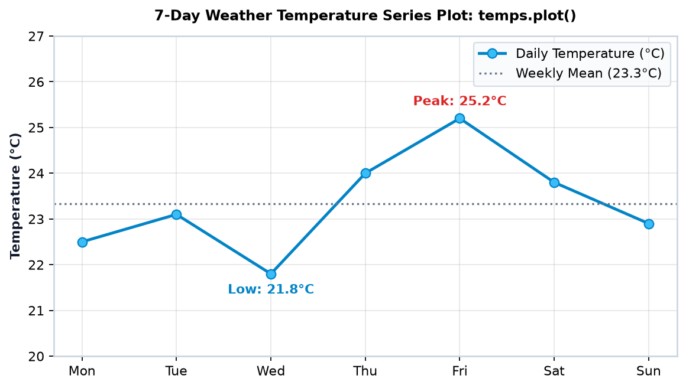
12. Reading CSV and Excel Files: First Introduction
Real life mein hum kabhi bhi 1,000 rows Python code mein hath se type nahi karte! Data hamesha CSV (Comma Separated Values) ya Excel (XLSX) format mein disk par stored hota hai.
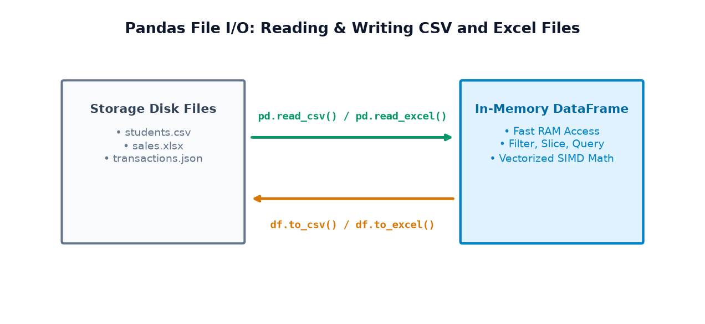
Core File I/O Functions
pd.read_csv('filename.csv'): Disk se CSV file read karke instant 2D DataFrame create karta hai.df.to_csv('filename.csv', index=False): Cleaned DataFrame ko disk par CSV file ki tarah save karta hai.pd.read_excel('filename.xlsx', engine='openpyxl'): Multi-sheet Excel workbook ko DataFrame mein load karta hai.df.to_excel('filename.xlsx', index=False): Excel workbook generate karta hai.
Complete Executable File Round-Trip Example
import pandas as pd
# Original DataFrame in memory
students = pd.DataFrame({
'Name': ['Aarav', 'Diya', 'Rohan'],
'Marks': [85, 92, 78],
'Department': ['CS', 'IT', 'CS']
})
# 1. Export DataFrame to CSV on disk
students.to_csv('students_export.csv', index=False)
print("-> Saved students_export.csv to disk.")
# 2. Read CSV back from disk into a fresh DataFrame
loaded_df = pd.read_csv('students_export.csv')
print("\n-> Successfully read from CSV file:\n", loaded_df)
# Verify shape and columns match perfectly
assert loaded_df.shape == (3, 3)
assert list(loaded_df.columns) == ['Name', 'Marks', 'Department']index=False is Best Practice
Jab aap to_csv('file.csv') karte hain bina index=False ke, to Pandas 0, 1, 2 row numbers ko ek naya unnamed column Unnamed: 0 bana kar save kar deta hai. Agli baar file load karne par ek duplicate index column aa jata hai. Isliye index=False use karna industry standard habit hai!
13. 10 Common Beginner Mistakes & Troubleshooting Tips
Pandas seekhte waqt lagbhag har beginner in 10 galtiyon mein phas jata hai. Inhe pehle se samajh lijiye taaki aapka ghanton ka debugging time bach sake:
- Mistake 1: Confusing Series with DataFrame
Problem:
df['Marks']ek 1D Series return karta hai (jismeshapesirf(5,)hoti hai), jabkidf[['Marks']](double brackets) ek 2D DataFrame return karta hai (shape(5, 1)).
Fix: Single bracket for Series, double brackets for DataFrame subset. - Mistake 2: Forgetting
import pandas as pdProblem:
NameError: name 'pd' is not defined.
Fix: Har script ya notebook ke top par hameshaimport pandas as pdlikhein. - Mistake 3: Case-Sensitivity & Trailing Whitespaces in Column Names
Problem: CSV mein header
'Marks '(space ke sath) ya'marks'(lowercase) hai, lekin aapdf['Marks']likh rahe hain, jisseKeyErrorcrash hota hai.
Fix: Pehleprint(df.columns)check karein yadf.columns = df.columns.str.strip()se spaces remove karein. - Mistake 4: Confusing Index Labels with Integer Positions
Problem: Custom index (jaise
'Mon','Tue') wali Series pars[0]call karne par ambiguity create hoti hai.
Fix: Label ke liyes.loc['Mon']aur integer position ke liyes.iloc[0]explicitly use karein. - Mistake 5: Calling
shape()as a FunctionProblem:
TypeError: 'tuple' object is not callablewhen writingdf.shape().
Fix:shapeek property/attribute hai, function nahi! Hameshadf.shapelikhein (bina parentheses ke). - Mistake 6: Checking Missing Values with
x == np.nanProblem: IEEE-754 standard ke mutabiq
NaN == NaNhameshaFalsehota hai!
Fix: Hameshadf.isna()yapd.isna(x)use karein. - Mistake 7: Assuming Every Column with Numbers is Numeric
Problem: Agar CSV ke kisi cell mein number ke sath text ya symbol (jaise
"$85"ya"N/A") likha hai, to Pandas poore column koobject(string) dtype bana deta hai, aur.mean()fail ho jata hai.
Fix:df.dtypescheck karein aurpd.to_numeric(df['col'], errors='coerce')se convert karein. - Mistake 8: Misunderstanding Jupyter Notebook Output vs Terminal
print()Problem: Terminal script mein sirf
df.head()likh kar chhod dena, jisse console par kuch print nahi hota.
Fix: Standalone Python script (.py) mein hameshaprint(df.head())likhein. - Mistake 9: FileNotFoundError on Relative File Paths
Problem:
pd.read_csv('data.csv')crash hota hai kyunki terminal kisi doosre working directory mein khula hai.
Fix: Absolute path use karein ya verify karein ki Python script aur CSV file same directory mein hain. - Mistake 10: Assuming a High Correlation Proves Causation
Problem: Graph mein do lines ek sath upar jaate dekh kar conclude kar lena ki A ne B ko cause kiya.
Fix: Correlation sirf statistical association dikhata hai; causation prove karne ke liye controlled experiments aur domain knowledge chahiye.
14. Quick Revision, Glossary & What Comes Next?
Chaliye is topic ke important terms, 5 golden takeaways, aur next learning milestone ka quick revision karte hain:
Core Glossary of Terms
| Term | Definition & Meaning in Pandas |
|---|---|
| Series | A 1D labeled array capable of holding any data type (integers, strings, floats). |
| DataFrame | A 2D size-mutable, tabular data structure with labeled axes (rows and columns). |
| Index | Explicit labels for rows in a Series or DataFrame (default 0..N-1, or custom dates/strings). |
| Columns | Feature labels for vertical Series inside a DataFrame. |
| dtype | The underlying data type of a column (e.g. int64, float64, object). |
| Boolean Indexing | Filtering rows by passing a condition (e.g. df['Marks'] > 80). |
| NaN | Not a Number — standard floating-point representation of missing or undefined data. |
- Pandas is the universal standard for tabular data manipulation in Python Data Science.
- Series is 1D; DataFrame is 2D. A DataFrame is essentially a collection of aligned Series sharing a common index.
- Labels are superpowers: Explicit row and column labels make business logic readable (e.g.
expenses['Sat']). - Vectorized Operations rule: Formulas like
df['Price'] * df['Qty']run in compiled C speed without manual loops. - Always inspect before analyzing:
head(),shape,columns,dtypes, anddescribe()are your best friends.
Agla topic hai Pandas Topic 2: Creating Series & Indexing Deep-Dive! Wahan hum seekhenge ki Python lists, dictionaries, scalar values, aur NumPy arrays se Series kaise construct karte hain, .loc vs .iloc ka precise difference kya hai, slicing with string labels kaise kaam karti hai, aur missing values ke sath Series alignment kaise behave karti hai!
15. Practice Questions & Interactive Assessment (20 Questions)
Apni understanding test karne ke liye neeche diye gaye 20 questions solve kijiye. Har question ke neeche expandable accordion mein complete solution aur simple Hinglish explanation di gayi hai:
Part 1: 5 Output-Prediction Questions
Q1: What will be the output of pd.Series([10, 20, 30]).shape?
(3,)Hinglish Explanation: Pandas Series strictly 1-Dimensional hoti hai. Isliye iska shape 1-element tuple
(3,) hota hai, matrix shape (3, 1) nahi.
Q2: What is the output of type(pd.DataFrame({'A': [1, 2]})['A'])?
<class 'pandas.core.series.Series'>Hinglish Explanation: Jab aap DataFrame se single bracket
df['A'] se ek column access karte hain, to Pandas ek 1D Series object return karta hai.
Q3: Given s = pd.Series([100, 200], index=['a', 'b']), what does s['b'] evaluate to?
200Hinglish Explanation: Custom index label
'b' se direct lookup karne par us label ke samne wali value 200 return hoti hai.
Q4: If df.shape is (100, 5), what does len(df) return?
100Hinglish Explanation: DataFrame par
len(df) call karne se hamesha total number of rows (first dimension) return hoti hai.
Q5: What is the output of pd.Series([5, 10, 15]).mean()?
10.0Hinglish Explanation: $(5 + 10 + 15) / 3 = 30 / 3 = 10.0$. Pandas mean calculation floating-point float64 return karta hai.
Part 2: 5 Short Coding Exercises
Exercise 1: Create a Series of 4 city temperatures with city names as index labels.
import pandas as pd
city_temps = pd.Series([32.5, 28.0, 35.2, 24.8], index=['Delhi', 'Mumbai', 'Jaipur', 'Shimla'])
print(city_temps)Exercise 2: Create a 3-row DataFrame of books with title, author, and price.
import pandas as pd
books_df = pd.DataFrame({
'Title': ['Python Basics', 'Data Science 101', 'Machine Learning Guide'],
'Author': ['Guido', 'Wes', 'Andrew'],
'Price': [450, 699, 850]
})
print(books_df)Exercise 3: Filter rows where price is greater than 500 in books_df.
expensive_books = books_df[books_df['Price'] > 500]
print(expensive_books)Exercise 4: Add a new column 'Discounted_Price' giving 10% discount on Price.
books_df['Discounted_Price'] = books_df['Price'] * 0.90
print(books_df)Exercise 5: Calculate the average price of all books in the DataFrame.
avg_price = books_df['Price'].mean()
print(f"Average Book Price: ₹{avg_price:.2f}")Part 3: 5 Concept-Check MCQs
MCQ 1: What is the conventional import alias for Pandas in Python?
Correct Answer: B) import pandas as pd
Hinglish Explanation:
pd Python data science community ka universal conventional shortcut hai.
MCQ 2: What is the primary dimensional difference between a Series and a DataFrame?
Correct Answer: B) Series is 1D, DataFrame is 2D
MCQ 3: Which function is used to load data from a CSV file into a DataFrame?
Correct Answer: B) pd.read_csv()
MCQ 4: What does df.head() display by default if no argument is passed?
Correct Answer: B) First 5 rows
MCQ 5: How are missing values typically represented in Pandas numerical columns?
Correct Answer: C) NaN (Not a Number — IEEE 754 standard float).
Part 4: 3 Debugging Challenges
Debug 1: df.shape() gives TypeError: 'tuple' object is not callable
shape as a function with parentheses ().Fix:
shape is an attribute/property. Write df.shape without parentheses.
Debug 2: df['marks'] gives KeyError: 'marks' when column is 'Marks'
Fix: Match the exact casing:
df['Marks'].
Debug 3: if value == np.nan: never triggers
NaN == NaN evaluates to False.Fix: Use
pd.isna(value) or np.isnan(value).
Part 5: 2 Real-Life Mini-Challenges
Challenge 1: Identify Defaulter Students with Attendance < 75%
Solution Code:
defaulters = df[df['Attendance'] < 75]
print("Exam Warning Notice Required for:")
print(defaulters[['Name', 'Department', 'Attendance']])Challenge 2: Compute Store Profit Margin Column
SellingPrice aur CostPrice columns hain. Har product ka profit margin percentage nikalna hai.Solution Code:
df['Profit_INR'] = df['SellingPrice'] - df['CostPrice']
df['Margin_Pct'] = (df['Profit_INR'] / df['SellingPrice']) * 100
print(df[['ProductName', 'Margin_Pct']])16. Capstone Mini-Project: Student Performance Explorer
Chaliye is topic ke sabhi core concepts (DataFrame creation, inspection, statistics, boolean filtering, group aggregations, aur visual analysis) ko ek complete, runnable end-to-end laboratory project mein execute karte hain:
import pandas as pd
import numpy as np
# =====================================================================
# Step 1: Build the Synthetic Student Performance Dataset
# =====================================================================
project_data = {
'student_name': ['Aarav Sharma', 'Diya Patel', 'Rohan Verma', 'Ananya Iyer',
'Kabir Singh', 'Meera Nair', 'Devansh Gupta', 'Pooja Reddy'],
'department': ['CS', 'IT', 'CS', 'ECE', 'IT', 'CS', 'ECE', 'IT'],
'marks': [88, 94, 76, 68, 91, 84, 72, 89],
'attendance': [92, 96, 85, 78, 90, 88, 80, 94],
'study_hours': [6.5, 8.0, 5.0, 3.5, 7.5, 6.0, 4.0, 7.0]
}
df_proj = pd.DataFrame(project_data)
# =====================================================================
# Step 2: Inspect Dimensions and Data Types
# =====================================================================
print("=" * 60)
print("1. DATASET OVERVIEW & INSPECTION")
print("=" * 60)
print(f"Total Records : {df_proj.shape[0]} students")
print(f"Total Features: {df_proj.shape[1]} columns: {list(df_proj.columns)}")
print("\nFirst 3 Records (head):\n", df_proj.head(3))
# =====================================================================
# Step 3: Batch Performance Metrics
# =====================================================================
avg_marks = df_proj['marks'].mean()
avg_att = df_proj['attendance'].mean()
print("\n" + "=" * 60)
print("2. BATCH PERFORMANCE METRICS")
print("=" * 60)
print(f"Overall Class Average Marks : {avg_marks:.2f} points")
print(f"Overall Average Attendance : {avg_att:.2f}%")
# =====================================================================
# Step 4: Identify Top Scorer (Topper)
# =====================================================================
top_idx = df_proj['marks'].idxmax()
topper = df_proj.loc[top_idx]
print(f"Batch Topper : {topper['student_name']} ({topper['department']}) with {topper['marks']} marks")
# =====================================================================
# Step 5: Filter Distinction Students (Marks >= 80)
# =====================================================================
distinction = df_proj[df_proj['marks'] >= 80]
print("\n" + "=" * 60)
print(f"3. DISTINCTION HOLDERS (>= 80 Marks) - Total: {len(distinction)} Students")
print("=" * 60)
print(distinction[['student_name', 'department', 'marks', 'attendance']])
# =====================================================================
# Step 6: Department-Wise Performance Breakdown
# =====================================================================
dept_analysis = df_proj.groupby('department').agg(
Student_Count=('marks', 'count'),
Mean_Marks=('marks', 'mean'),
Mean_Attendance=('attendance', 'mean')
).round(1)
print("\n" + "=" * 60)
print("4. DEPARTMENT-WISE PERFORMANCE SUMMARY")
print("=" * 60)
print(dept_analysis)
# =====================================================================
# Step 7: Correlation Analysis (Study Hours vs Marks)
# =====================================================================
corr_val = df_proj['study_hours'].corr(df_proj['marks'])
print("\n" + "=" * 60)
print(f"5. CORRELATION (Study Hours vs Marks): r = {corr_val:.4f}")
print("=" * 60)
print("Interpretation: Strong positive correlation observed between study hours and exam scores.")
print("Caution: Correlation proves statistical association, NOT automatic causation!")
print("=" * 60)Is mini-project ne demonstrate kiya ki kaise Pandas 8 alag-alag analytical questions ko sirf 20 lines of clean code mein answer kar sakta hai: Dataset summary, batch mean, top scorer identification, threshold filtering, department aggregation, aur statistical correlation. Scientific integrity note: Humne paya ki study hours aur marks mein $r = 0.9936$ correlation hai, lekin yeh small synthetic dataset par illustrative exercise hai — real-world education mein student background, teaching quality, aur health jaise multiple confounding factors bhi marks ko affect karte hain.